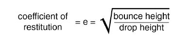

To learn/review;


1st Law – Inertia · 2nd Law – Acceleration · 3rd Law – Action/Reaction
Kinetics:
The concepts of mass, force, and energy as they affect motion.


An object at rest tends to stay at rest and an object in uniform motion tends to stay in uniform motion unless acted upon by a net external force.
What is Inertia?


An object is at rest when the net forces acting on it sum to zero.
ΣFz = 0 ΣFx = 0 ΣFy = 0
This individual is in static equilibrium. Is there such a thing as dynamic equilibrium?
When is an object in uniform motion? This is Dynamic Equilibrium.

The momentum of an object can be thought of as the tendency for an object to resist change in motion and continue to move in its direction of travel.

Momentum is related to inertia but not the same. Inertia is an object’s tendency to resist change in the state of motion (at motion and rest). However during motion an object has momentum.
That is, an object resists its change in state of motion and this resistance is related to its mass (inertia) and velocity.
P = mv
where P is the object’s linear momentum, m is the object’s mass and v is the object’s velocity. SI units: kg·m/s
Remember that velocity is a vector quantity, so momentum will have a magnitude and direction.
Understanding Momentum is really important when dealing with things that collide.
The outcome of collisions during these sports can be explained by quantifying the momentum of the system.


In the absence of external forces, the total momentum of a given system is conserved.
Pbefore = Pafter or (mv)before = (mv)after
The law of conservation of momentum helps us understand collisions — the sum of the momentum before the collision must equal the sum of the momentum after the collision.
Collisions range between elastic and inelastic collisions:

Most collisions are neither perfectly elastic nor perfectly inelastic but somewhere in between.
The coefficient of restitution is a means of quantifying how elastic the collisions are.
e = velocity of separation / velocity of approach
= (VBf – VAf) / (VAi – VBi)
Where VBf = final velocity of object B, VAf = final velocity of object A, VAi = initial velocity of object A, VBi = initial velocity of object B.
Most rules for ball sports directly or indirectly specify what the coefficient of restitution must be for the ball on the specific playing surface or implement.

The coefficient of restitution is affected by the nature of both objects. For ball sports the coefficient of restitution can be figured out using a simple equation.
If a ball is dropped from a specific height onto a fixed surface, then the height of the rebound and the drop height can be used to determine the coefficient of restitution. This is a measure of the bounciness of the ball and the implement or surface it strikes will greatly affect the outcome.
An elastic collision occurs when the two objects collide and then bounce off one another.
A collision between two pool or snooker balls is a good example of an almost totally elastic collision. The objects collide and then seem to bounce off of each other and move separately.
In a perfectly elastic collision, in a straight line, each object transfers all of its momentum to the other object.
mAvA initial + mBvB initial = mAvA final + mBvB final
Example Problem
A 6 kg bowling ball enters an elastic collision with a 1 kg bowling pin. If the bowling ball has a velocity of 5 m/s before the collision and 4 m/s after the collision, what is the speed of the pin after the collision? (Assume that the speed of the pin before the collision is 0 m/s)


Solution
Before collision
After collision
(mball1)(vball1) + (mpin1)(vpin1) = (mball2)(vball2) + (mpin2)(vpin2)
(6 kg)(5 m/s) + (1 kg)(0 m/s) = (6 kg)(4 m/s) + (1 kg)(vpin2)
30 kg·m/s = 24 kg·m/s + vpin2(1 kg)
vpin2 = 6 m/s
After the collision, the pin has a velocity of 6 m/s in the original direction of the bowling ball.
The same collision, with the numbers on sliders
Since m is the same we can take it out of the equation. Assume v = 1 m/s and vB initial is zero. With a coefficient of restitution of 1, A stops dead and B leaves at 1 m/s.
Now B is coming the other way at 0.5 m/s. Same two equations, same coefficient of restitution — they swap velocities.
A 2 kg object at 1 m/s meets a 1 kg object at −1 m/s. The heavier one is turned around; the lighter one is thrown back much faster than it arrived.
An inelastic collision occurs when two objects collide and they behave as one object after the collision.
A common example of a perfectly inelastic collision is when two objects collide and then stick together afterwards. This equation describes the conservation of momentum for an inelastic collision:
m1v1 + m2v2 = (m1 + m2)vcombined
Example Problem
During the feature match of Wrestlemania III, Hulk Hogan and Andre the Giant run towards each other and collide. If Andre has a mass of 235 kg and was traveling 1.4 m/s, and if Hulk has a mass of 115 kg and was traveling at −3.8 m/s, what is their combined velocity? (assuming that they entangle and continue traveling as one)

Solution
m1 = 235 kg m2 = 115 kg
v1 = 1.4 m/s v2 = −3.8 m/s
(mv)1 + (mv)2 = (m1 + m2)v
(235 kg)(1.4 m/s) + (115 kg)(−3.8 m/s) = (235 kg + 115 kg)v
329 kg·m/s − 437 kg·m/s = (350 kg)(v)
v = −0.3 m/s
Their combined velocity is 0.3 m/s in Hulk Hogan’s original direction
The same collision, with the numbers on sliders
You are required to be able to solve questions for conservation of momentum only on a straight line — 1 dimension.
However you will be expected to conceptually understand simple collisions in 2 dimensions.
For elastic collisions in two dimensions we need to break the momentum into components. Each ball has a mass of 0.1 kg and ball B was at rest. What is the speed and direction of ball B after the collision?
Pox = Pfx and Poy = Pfy — one equation for each axis.
Put the two components back together for the magnitude and the direction.
In the previous example we had an idea of the angle of the balls velocities before and after the collision. This allowed us to determine the magnitude of the velocity. However that is not always the case.
To determine the angle and magnitude of the balls velocities before and after the collision we need to set up a frame of reference and explore the conservation of momentum in axes normal (perpendicular) and tangent (parallel) to the contact surface interaction.

With our original x and y axis you can see:

To determine the final velocity vectors angles you need to set up a normal and tangent coordinate system. The tangential components remain unchanged; conservation of linear momentum is maintained for the normal components.
Let’s think about that in terms of Newton’s 1st law.
An object at rest tends to stay at rest and an object in motion tends to stay in motion (in its component direction) unless a net external force acts upon it.

Understanding Momentum is really important when dealing with the combined motion of the human body and techniques to transfer momentum from one limb to another.
The outcome of transferring momentum from one limb to another can be explained by the conservation of momentum of the system.
The transfer of momentum during human movement can be discussed in reference to simple and complex tasks.
In a sit to stand task we use transfer of momentum to help us stand. By leaning forward our trunk has momentum which can be used to assist in hip and leg extension.

Dark vertical line indicates time of occurrence of peak horizontal momentum of the CM.

During a complex task such as high jump we use transfer of momentum to help us increase our vertical velocity.
The free limbs contribute by transferring their individual momentum to the velocity of the whole body:


The combined free limb RM (CFLRM) reaches a peak just after the lead leg but just before the arms. The relative momentum of all free limbs reduces at take-off, illustrating the transfer of each segment momentum to the rest of the body.
The graph shows the estimated additional vertical force generated as a result of the transfer of momentum.

Law II
“A force applied to a body causes an acceleration of that body of a magnitude proportional to the force, in the direction of the force, and inversely proportional to the body’s mass.”
F = ma

Newton's second law gives us the connection between force (F) and motion (a).
It provides a framework for thinking about how all of the forces (internal and external) can control motion.
We will use this law as a basis for our discussion of static and dynamic analysis including inverse dynamics.
F = ma


Law III
“Every applied force is accompanied by a reaction force, equal in magnitude and opposite in direction.”

When a jumper generates a force against the ground, the ground generates an equal and opposite force against the jumper.